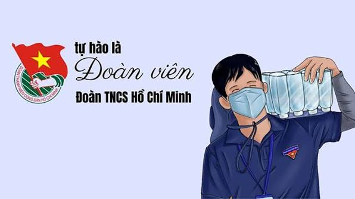

CHẮP CÁNH ƯỚC MƠ
Báo tường chào mừng ngày 26/3
Lịch sử Đoàn TNCS Hồ Chí Minh
Đoàn Thanh niên Cộng sản Hồ Chí Minh được thành lập vào ngày 26 tháng 3 năm 1931. Trải qua nhiều giai đoạn lịch sử với những tên gọi khác nhau, Đoàn luôn là lực lượng xung kích, đi đầu trong sự nghiệp đấu tranh giải phóng dân tộc, xây dựng và bảo vệ Tổ quốc.
Dưới sự lãnh đạo của Đảng và Chủ tịch Hồ Chí Minh, các thế hệ đoàn viên thanh niên Việt Nam đã không ngừng học tập, rèn luyện, sẵn sàng hy sinh vì độc lập dân tộc và hạnh phúc của nhân dân. Ngày nay, Đoàn tiếp tục phát huy vai trò là môi trường giáo dục lý tưởng cho thanh niên, góp phần xây dựng đất nước ngày càng giàu mạnh.
Cảm xúc ngày ra trường
Tháng Ba về mang theo sắc xanh của tuổi trẻ. Với học sinh cuối cấp, ngày 26/3 là dấu mốc ghi lại những kỷ niệm đẹp dưới mái trường thân yêu.
Chắp cánh ước mơ
Tuổi trẻ là để học tập, rèn luyện và cống hiến. Dưới ngọn cờ Đoàn TNCS Hồ Chí Minh, mỗi đoàn viên luôn nuôi dưỡng những ước mơ cho tương lai.
Góc ảnh
Logo Đoàn TNCS Hồ Chí Minh

Chủ tịch Hồ Chí Minh nói chuyện thân mật với Đại biểu Thanh niên xung phong dự Đại hội Thanh niên xung phong chống Mỹ cứu nước toàn miền Bắc (Tháng 1/1967)

Hoạt động của đoàn viên Thanh niên
Tự hào là Đoàn viên